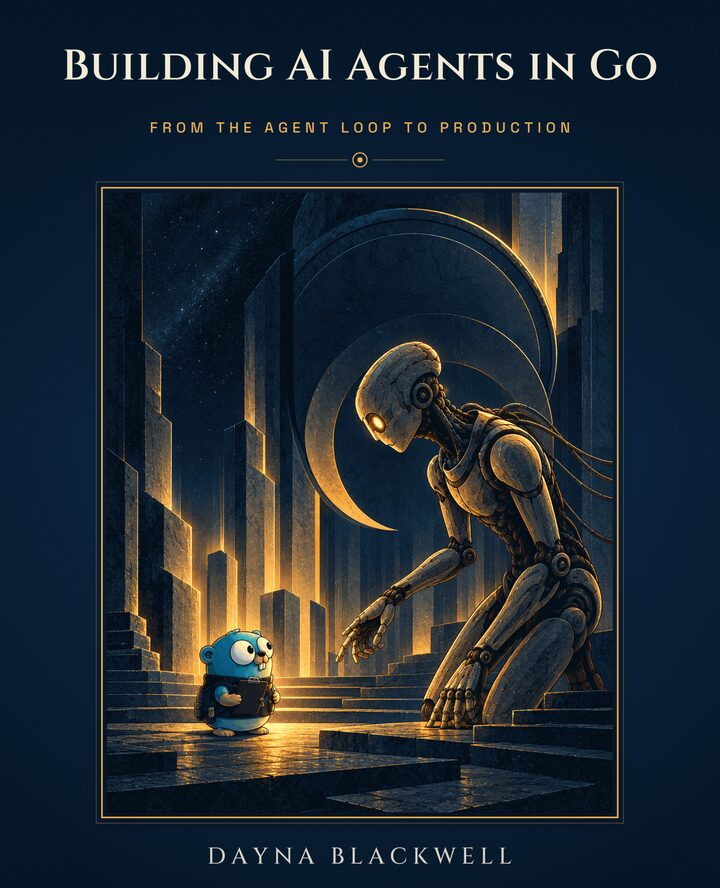

A book by Dayna Blackwell
Building AI Agents in Go
From the agent loop to production
An agent is a model in a loop. This book has you build the loop.
For Go developers new to language models. Go basics are enough: no machine learning, no math, no framework required.
- 17 chapters in three parts
- Go 1.27, standard library first
- Every example runs offline

The book
One agent, built one tested piece at a time
Write an AI agent in Go one tested piece at a time: the request, the model call, the tools, and the decision to go around again. You start with 30 lines and finish with an agent that triages crash reports for a real Go web service: it reproduces each bug, fixes it, and files one issue per cause, as a command and as a service.
Every turn of the loop has four stages
Build the request
Decide what the model sees: instructions, the conversation so far, tool results, and memory.
Call the model
Send the request, stream the reply, retry on failure, and count the cost.
Run the tools
Carry out the actions the model asked for.
Decide
Stop with an answer, or go around again.
Every chapter works on one of these stages, or on the whole loop.
The project
What you’ll build
One agent grows chapter by chapter. It starts on a failing test in a tiny Go package and ends triaging the crash reports of remind, a small reminders web service that ships with the book with bugs seeded in it.
remind is about 4,800 lines of Go in twenty packages, and its evidence is built to mislead: some crashes happen far from their cause, some come from an older version whose bug is already gone, and some reports carry text that tries to give the agent orders.
-
Part 1 · Chapters 1 to 6
Foundations
A loop driven by a scripted model, then a real model with tools that fixes a failing test on its own, with budgets, offline tests, and streaming.
-
Part 2 · Chapters 7 to 10
Building out
The crash-triage job: tools the model uses well, context that keeps a long investigation focused and affordable, work in parallel, and MCP.
-
Part 3 · Chapters 11 to 17
Production
Other providers, retries and tracing, evals, sandboxing and approval, runs that survive a crash, frameworks compared, and the complete agent as a command and as a service.
You’ll learn how to
- Give a model tools it uses well, and see why one sentence in a tool description can decide its next move
- Keep long runs focused and affordable as the context fills up
- Test an agent whose answers vary, and tell a real improvement from chance
- Sandbox what it can touch, resist prompt injection, and ask a person before risky actions
- Survive a crash mid-run without filing anything twice
- Judge any agent framework against the parts you built yourself
Recorded runs, saved in the repository
Every result is measured
The examples run offline from recorded runs, and the book reports what worked, what didn’t, and what each run cost, including the times the obvious design lost. Each chapter names the command that prints its results again.
-
79 of 80
One sentence in a tool description decided the first move in 79 of 80 replies.
Chapter 10 added one sentence to the description of a tool from another program and sent the agent’s first request to four models, ten times each. You learn how to write that sentence for your own tools, and how to defend against one written by someone else.
Chapter 10, MCP
-
910 crashes, 0 duplicates
An agent that survives a crash without filing anything twice.
Chapter 15 crashes a run at every point where a crash could land, then resumes it: 910 scenarios. With idempotency keys, the agent made no duplicates and lost nothing.
Chapter 15, Durable, deployed agents
Table of contents
Seventeen chapters, one agent
An introduction, three parts, exercise notes for every chapter, and a glossary. Under each chapter is what you can do once you finish it.
Part 1
Foundations
Standard library only
What an agent is
Explain what an agent is and run a working agent loop with no AI involved.
Talking to a model
Call a real model from Go, hold a conversation, and understand what each call costs.
Inside the model
Explain how a language model turns text into tokens and picks the next one, why it varies and makes things up, and see it happen in a real model.
Your first real agent
Give a real model tools and watch it fix a failing test on its own.
Hardening and testing the loop
Make the loop stop for clear reasons, stay within budget, and pass offline tests.
Streaming the loop
Show the agent’s work live as it happens, and stop it partway without leaving work half done.
Part 2
Building out
Standard library only
Designing tools
Write tools a model uses well, get answers back in a fixed structure, and measure whether it picks the right tool.
Context and memory
Improve the system prompt by measurement, and keep a long-running agent focused, affordable, and within its context window.
Concurrency
Run tools and whole investigations in parallel safely, and give one task a fresh context with a sub-agent.
MCP
Use tools from other programs, and offer yours to them, through a standard protocol.
Part 3
Production
Intermediate material
Providers and SDKs
Plug in a provider whose API works differently without changing the agent, and use an official SDK where it helps.
Reliability and observability
See what the agent did, retry only what’s safe, and know what each run cost.
Testing and evals
Test an agent whose answers vary, and measure honestly whether a change made it better.
Safety and human approval
Sandbox the agent’s tools, defend against prompt injection, and require a person’s approval for risky actions.
Durable, deployed agents
Keep the agent running through crashes without repeating an action, and ship it as a program you can stop and restart safely.
Frameworks in context
Judge any agent framework against the parts you built, and decide whether to build, adopt, or adopt for part of the job.
Capstone: the crash-triage agent
Run the complete agent on a service’s crash reports, as a command and as a service, and measure it across models.
Formats
What you get
PDF, light edition
The designed pages on white.
PDF, dark edition
The same pages on the cover’s night navy, for reading on screen.
EPUB
Reflowable text for e-readers, in your reader’s own light, dark, or sepia theme.
HTML edition
One self-contained file in light and one in dark, with a contents panel, to read in any browser.
Companion code
One directory per chapter,
ch01toch17, each a tested snapshot of the agent; theremindservice, the issue tracker, the crash catalog with its hidden tests, and the saved runs behind every table of results.
Building AI Agents in Go
All four formats and the companion code
$29
Buy the bookOne price, permanent. Buyers get every update of this edition free, and the store sends each update by email.
All 17 chapters, about 750 pages, in light and dark PDF editions and EPUB.
The companion code is free and open source (Apache 2.0) at github.com/blackwell-systems/go-agents-book-code.
Free
Read a free sample
The sample holds the introduction, two full chapters, and an excerpt from Part 3.
Introduction
What the book builds, what it measured, and how to read it.
Chapter 1: What an agent is
The loop and its four stages, written in about 30 lines of Go and driven by a scripted model, so you can test every part before a real model is involved.
Chapter 4: Your first real agent
A real model gets tools and fixes a failing test in the
durationpackage on its own.From chapter 15: One crash, step by step
A live run killed in the middle of filing an issue, followed from the checkpoint on disk to the question its restart asks a person.
FAQ
Common questions
Who is this book for?
Go developers who are new to language models and agents. You should be able to write and run a Go program, and know structs, interfaces, errors, and packages. You don’t need to have used or built an agent, or to know how models work, machine learning, or math. Every idea the code depends on is explained before the code uses it.
If you already build agents in Python or TypeScript, the book also works as a way into Go’s version of the job.
Do I need an API key?
No. Every example runs offline: without a key, the programs replay replies recorded from a real model, while the tools, including go test, run for real on your machine.
Live runs are optional and cheap. Create an OpenRouter account, add a few dollars of prepaid credit, and set OPENROUTER_API_KEY; chapter 2 walks through it. The 40 live runs of Part 1’s bug fix in chapter 1 cost no more than a fifth of a cent each, and when prepaid credit runs out, calls fail instead of running up a bill.
Which Go version does it use?
Go 1.27, the first release with encoding/json/v2 in the standard library without an experiment flag. Go 1.21 and later download the right toolchain on their own when they read the module’s go.mod.
Does it use an agent framework?
No. The main module has no dependencies through chapter 10, so you see every moving part: the HTTP client, the stream parser, the JSON schemas, the parallel tool runner, and the MCP client. From chapter 11, each dependency is justified where it first appears.
Chapter 16 maps five Go agent frameworks onto the parts you built, then ports one piece of the triage agent to Eino and Genkit and runs all three versions against the same scripted replies, so you can decide whether to build, adopt a framework, or adopt one for part of the job.
Which models does it work with?
The book calls models through OpenRouter, which reaches models from many companies through one account and one request format. The model ID is one setting, so when a model is retired you choose another with tool support and change the setting.
Will the book be updated?
Each edition gets a yearly refresh of the text, the code, the recorded runs, and chapter 17’s table of results across models, with errata in the repository between editions.
Buyers get every update of this edition free, and updates arrive by email through the store.